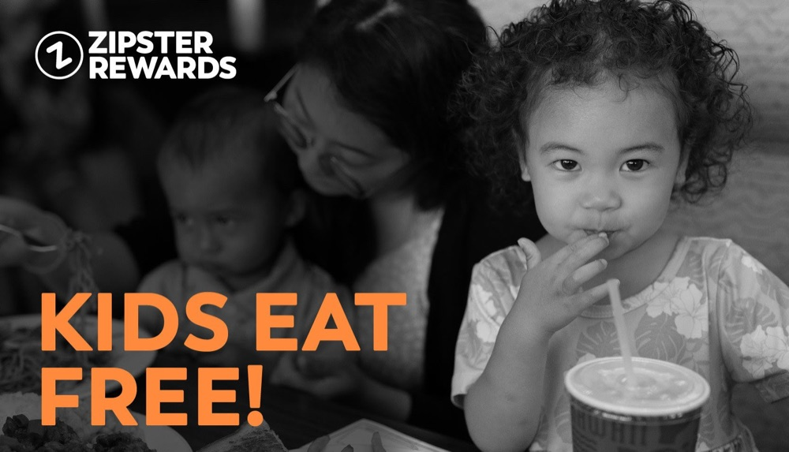
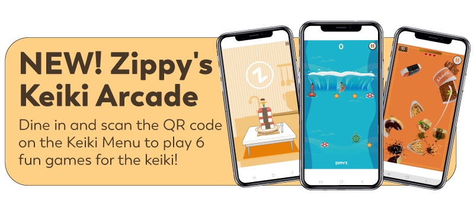

45%more likely to have childrenPromoters in Hawaiʻi
157%more likely to have childrenPromoters in Las Vegas, our new market
Familiesunder-represented, with above-average order valueFrom Zipster Rewards data
The question
Where should Zippy's look for growth, at home and in a new market? We implemented Zippy's first brand tracker to measure Net Promoter Score, and to see which segments were our biggest Detractors and Promoters.
The insight
Promoters in Hawaiʻi were 45% more likely to have children in the household, and in Las Vegas 157% more likely. Loyalty data added the business case: families were under-represented, with an average order value well above the norm. If we could grow the segment and get families in more often, there was a clear opportunity.

What we launched
- Keiki MenuWe brought back the keiki menu, which had been pulled during the pandemic.
- Keiki Eat FreeTargeted offers for families, delivered through the Zipster Rewards program.
- Keiki ArcadeAn arcade of Zippy's-branded mobile games, reached from a QR code on the keiki menu, to make visits more fun for kids and parents.
Skills used
- Customer Insight & Analytics
- Brand Tracking & NPS
- CRM & Loyalty
- Product Strategy